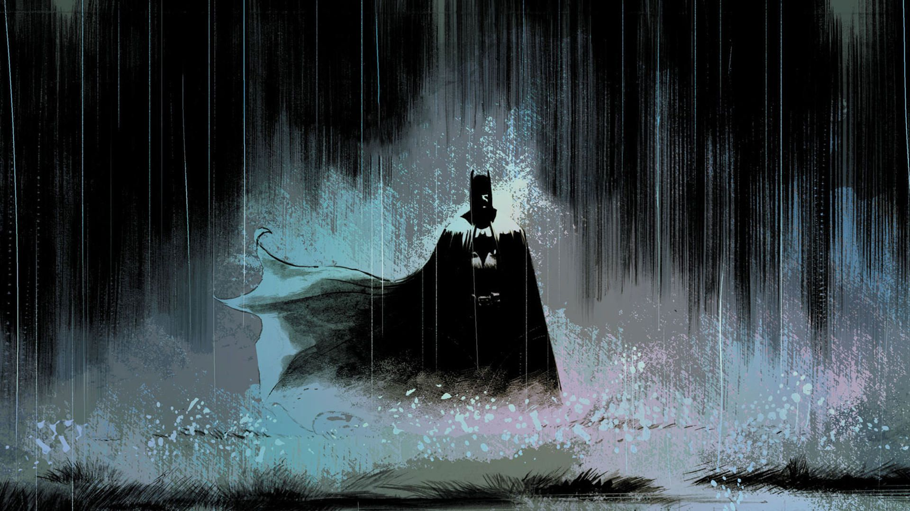

KISAH BATMAN
 Batman (Christian Bale), Jaksa Wilayah Harvey Dent (Aaron Eckhart)
dan Letnan James Gordon (Gary Oldman) membentuk aliansi
untuk menyingkirkan Gotham dari organisasi kriminal.
Bruce Wayne terkesan dengan idealisme Harvey dan menawarkan untuk
mendukung kariernya.
Ia percaya bahwa ketika Harvey berperan sebagai pelindung kota Gotham,
Bruce bisa menyerah menjadi
Batman dan menjalani kehidupan normal bersama Rachel Dawes (Maggie Gyllenhaal),
meskipun Rachel dan Harvey sedang
menjalani hubungan asmara.
Bos mafia, Sal Maroni (Eric Roberts) beserta Gambol (Michael Jai White) dan Chechen (Ritchie Coster)
mengadakan konferensi
video dengan akuntan mereka yang korup, Lau (Ng Chin Han), yang telah mengambil dana mereka
untuk diamankan dan melarikan
diri ke Hong Kong. Joker menghalangi konferensi video dan memperingatkan mereka bahwa
Batman tidak memiliki wilayah hukum
dan dengan demikian tidak terganggu oleh hukum, lalu Joker menawarkan untuk
membunuhnya dengan imbalan setengah dari
uang mereka. Setelah Gambol meletakkan hadiahnya di kepalanya,
Joker membunuh Gambol dan mengambil alih para penjahat.
Mereka akhirnya memutuskan untuk membawa Joker atas tawarannya.
Batman menemukan Lau di Hong Kong dan membawanya kembali ke kota Gotham untuk bersaksi sehingga memungkinkan Harvey untuk menangkap seluruh para penjahat.
Joker mengancam untuk tetap membunuh
orang-orang kecuali Batman mengungkapkan identitasnya dan dimulai dengan membunuh Komisaris
Kepolisian Gillian B. Loeb (Colin McFarlane) dan hakim yang memimpin sidang organisasi kriminal.
Joker juga
mencoba membunuh Wali kota Anthony Garcia (Néstor Carbonell), tetapi James mengorbankan dirinya untuk menghentikan
pembunuhan. Harvey mengetahui bahwa Rachel adalah target berikutnya.
Bruce
memutuskan untuk mengungkapkan identitas rahasianya. Sebelum ia melakukannya, bagaimanapun,
Harvey mengumumkan bahwa ia adalah Batman. Harvey dimasukkan ke dalam tahanan pelindung,
tetapi Joker
muncul dan menyerang konvoi. Batman datang untuk menyelamatkan Harvey dan James,
yang memalsukan kematiannya, menangkap Joker dan mengamankan promosi ke Komisaris. Rachel dan Harvey dikawal
pergi
oleh detektif dalam daftar gaji Sal Maroni. James kemudian mengetahui bahwa mereka tidak pernah sampai di rumah.
Batman menginterogasi Joker, yang mengungkapkan bahwa mereka telah terperangkap di
lokasi terpisah yang dilengkapi
dengan bahan peledak. Batman berusaha menyelamatkan Rachel, sementara James berusaha menyelamatkan Harvey.
Batman tiba di gedung, tetapi ia menyadari bahwa Joker
mengirimnya ke lokasi Harvey sebagai gantinya.
Kedua bangunan itu meledak, membunuh Rachel dan merusak separuh wajah Harvey. Joker lolos bersama Lau,
yang kemudian dibunuhnya bersama Chechen.
Coleman Reese (Joshua Harto), seorang akuntan di Wayne Enterprises,
menyimpulkan bahwa Bruce adalah Batman dan mencoba mengumumkan informasi tersebut kepada publik.
Tidak ingin pengungkapan Coleman
mengganggu rencananya, Joker mengancam untuk menghancurkan rumah sakit kecuali
seseorang membunuh Coleman. James memerintahkan evakuasi semua rumah sakit di kota Gotham dan bergegas
untuk mengamankan Coleman. Joker memberikan Harvey sebuah pistol dan meyakinkannya untuk membalas dendam atas
kematian Rachel, lalu menghancurkan rumah sakit dan melarikan diri dengan sejumlah besar
sandera.
Harvey melanjutkan serangkaian pembunuhan, memutuskan nasib orang-orang yang dimilikinya bertanggung jawab atas
kematian Rachel dengan membalikkan koin keberuntungannya.
Setelah mengumumkan bahwa kota Gotham akan tunduk kepada Joker ketika senja,
Joker memasang dua kapal feri yang dievakuasi dengan bahan peledak,
satu kapal feri berisi warga sipil dan kapal feri lain berisi
tahanan. Joker memberitahu bahwa ia akan
meledakkan dua kapal feri tersebut pada tengah malam, tetapi ia akan membiarkan seseorang hidup jika penumpangnya
(yang telah dipasang pemicu terhadap peledakkan
kapal lain) meledakkan yang lain. Batman menemukan Joker menggunakan
perangkat sonar yang memata-matai seluruh kota, dengan bantuan Lucius Fox (Morgan Freeman).
Baik warga sipil maupun tahanan menolak untuk saling membunuh, sementara Batman menangkap Joker setelah pertarungan
singkat. Sebelum polisi tiba untuk membawa Joker ke tahanan,
Joker membanggakan diri bahwa warga Gotham akan kehilangan harapan begitu
perilaku kriminal Harvey diketahui oleh
publik.
James dan Batman tiba di gedung tempat Rachel tewas. Harvey menembak Batman, menyelamatkan diri dan mengancam untuk
membunuh putra James (Nathan Gamble), mengklaim bahwa kelalaian James
yang bertanggung jawab atas kematian Rachel.
Sebelum Harvey bisa membalikkan koin keberuntungannya untuk putra James, Batman, yang mengenakan perisai pelindung
tubuh, mendorong Harvey dari gedung
hingga ke kematiannya. Mengetahui bahwa Joker akan menang jika orang-orang
mengetahui kebenaran tentang perilaku kriminal Harvey, Batman membujuk James untuk membuatnya yang bertanggung jawab
atas pembunuhan massal untuk mempertahankan citra heroik Harvey. Ketika polisi melakukan perburuan untuk Batman,
James menghancurkan Bat-Signal dan disaksikan oleh Lucius ketika perangkat sonar hancur
sendiri dan Alfred
Pennyworth (Michael Caine) membakar surat dari Rachel yang berisi bahwa ia berencana menikahi Harvey.